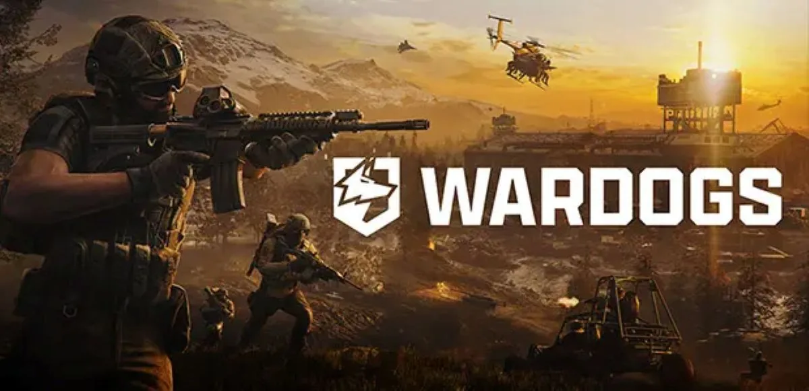

コスパ重視迷ったらこれ
FHD 高fps
- CPU
- Ryzen 7 7700
- GPU
- RTX 5060 TiVRAM 16GB
- AMDなら
- RX 9060 XTVRAM 16GB
- メモリ
- 32GB
- PC本体の予算
- 22万〜27万円前後
描画性能スコア（GPU GUIDE）68
線＝公式推奨GPU（RTX 3070）
公式推奨（RTX 3070・8コア以上のCPU）と同等以上を満たすFHD構成。大人数戦に備えてCPUは8コアにしています。

FPSPC負荷：重い早期アクセス
WARDOGSは2026年9月10日に早期アクセスが始まった、最大100人が3チームに分かれて戦う大規模FPSです。公式推奨はRTX 3070 / RX 6700 XT・Core i7-12700K / Ryzen 7 5700Xと、GPUだけでなくCPUにも要求があります。早期アクセス中なので、アップデートで重さが変わる可能性も考えて少し余裕のある構成を選びましょう。
QUICK ANSWER
OFFICIAL SPEC
ゲームの公式情報に掲載されている動作環境です（2026年10月18日確認）。「最低」は起動して遊べる下限、「推奨」は標準的な画質で遊ぶ目安で、高画質・高fpsを保証するものではありません。公式に記載のない項目は「記載なし」としています。
| 項目 | 最低 | 推奨 |
|---|---|---|
| OS | Windows 10 | Windows 11 |
| CPU | Intel Core i5-8600 / AMD Ryzen 5 3500 | Intel Core i7-12700K / AMD Ryzen 7 5700X |
| GPU | NVIDIA GTX 1660 / AMD Radeon RX 590 | NVIDIA RTX 3070 / AMD Radeon RX 6700 XT |
| VRAM | 記載なし | 記載なし |
| メモリ | 16GB | 16GB |
| ストレージ | 50GB | 50GB |
| 想定される動作 | FHD・低設定で60fps（アップスケーリング使用） | WQHD・中設定で70fps以上（ネイティブ）、または4K・中設定で60fps以上（アップスケーリング使用） |
早期アクセス中のタイトルです。正式リリースまでに必要スペックが変わる可能性があります。
SIPPO PICK
ここからは公式スペックではなく、Sippoが快適さと予算のバランスで選んだ構成です。fpsは画質設定や場面で大きく変わるため、実測していない数値は載せていません。
コスパ重視迷ったらこれ
線＝公式推奨GPU（RTX 3070）
公式推奨（RTX 3070・8コア以上のCPU）と同等以上を満たすFHD構成。大人数戦に備えてCPUは8コアにしています。
バランス重視
線＝公式推奨GPU（RTX 3070）
公式推奨の「WQHD中設定で70fps以上」より上を狙う構成。乗り物や破壊が重なる場面でもfpsを落としにくくしています。
予算はBTOの完成品（Windows付き）を想定した2026年10月時点の目安です。2026年はメモリとSSDの値上がりで価格が動きやすく、セールや構成の違いで数万円変わります。「推定」の付いた価格帯は、同じ構成の販売例を確認できず、近い構成の価格から推定した目安です。描画性能スコアはGPU GUIDEの数値で、DLSSなどの機能を除いた描画性能の相対値です（fpsではありません）。AMDの欄は、同じ価格帯で選べるRadeonの候補です。PC BUILD CHECKの参考価格も同じくBTO完成品の目安ですが、パーツごとの価格から計算した概算で、価格を確認した時期も違うため、このページの目安より低く出ることがあります。
RESOLUTION
解像度ごとのGPUの目安です。実測ベンチマークではなく、公式スペックとGPU同士の性能差から整理したSippoの目安です。
| 解像度 | GPUの目安 | 狙える目標 | 補足 |
|---|---|---|---|
| FHD | RTX 5060 Ti 16GB / RX 9060 XT 16GB | 高設定で高fps | 大人数戦に備えて8コアCPUを組み合わせます。 |
| WQHD | RTX 5070 / RX 9070 | 公式推奨（中設定70fps以上）より上 | 公式推奨のRTX 3070を上回る性能です。 |
| 4K | RTX 5070 Ti / RX 9070 XT 以上 | 中〜高設定（アップスケーリング併用） | 公式推奨は4K・中設定60fps以上をアップスケーリング前提で案内しています。 |
画質設定・アップスケーリング：公式スペック自体がアップスケーリングの使用を前提にした条件を含んでいます。大人数の戦闘では、アップスケーリングでGPUの負担を減らしてもCPUが限界になる場面があります。
GAME POINTS
WARDOGSは最大100人が3チームに分かれ、乗り物や建築・破壊も絡む大規模戦です。表示するプレイヤーや破壊された建物が増えるとCPUの処理も増えるため、GPUだけでなくCPUにも余裕を持たせましょう。
早期アクセス中は、最適化やコンテンツの追加で動作の重さが変わることがあります。ギリギリの構成より、公式推奨を少し上回る構成を選ぶと、アップデート後も困りにくくなります。
公式推奨は「WQHD・中設定でネイティブ70fps以上」と、条件がはっきり書かれています。FHDの高fpsを狙う人は推奨程度、WQHDの高設定を狙う人は推奨より上のGPUを目安にすると選びやすいです。
FAQ
RTX 3060は公式の最低（GTX 1660）と推奨（RTX 3070）の間の性能です。FHDの中設定前後が目安で、アップスケーリングを使うと余裕が出ます。
2026年10月18日時点では早期アクセス中です。Steamのストアページで最新の状況を確認してください。
公式の最低スペック（Core i5-8600 / Ryzen 5 3500）はどちらも6コアなので遊べます。ただし推奨は8コア以上のCPUなので、大人数戦を快適に遊ぶなら8コアを選ぶと安心です。
RELATED GAMES
このページの最終更新： ／ 公式スペックの確認：2026年10月18日 ／ 価格の確認：2026年10月18日